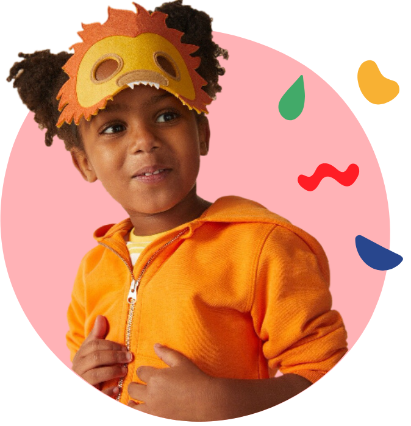

Bienvenue dans la Tipi community !
Que tu sois parent d’un enfant, d’un adolescent , grand-parent ou simplement un citoyen qui s’intéresse à l’éducation des enfants qui vont intégrer la société de demain, tu es au bon endroit.duration-200

Tipi community c’est le média qui accompagne les parents dans l’éducation de leurs enfants à travers des événements et des outils qui leur ressemblent.
Un centre d’information
Que tu sois parent d’un enfant, d’un adolescent , grand-parent ou simplement un citoyen qui s’intéresse à l’éducation des enfants qui vont intégrer la société de demain, tu es au bon endroit.
Cellule de soutien,
Questions de parents,
Lectures et méthodes décryptées Échanges entre parents.

Des events
Tipi est un catalyseur des initiatives entrepreneuriales et associatives autour de la parentalité. Chaque année nous organisons plusieurs événements récréatifs et informatifs.
Festival Tipi
Brunch
Conférences

Des outils
Il s’agit d’informer les parents de manière décomplexée sans les juger, en leur apportant une palette d’outils dans laquelle ils pourront choisir pour se construire en tant que parent.
Films éducatifs réalisés par Tipi
Ateliers parents/enfants
Conférences et webinaires